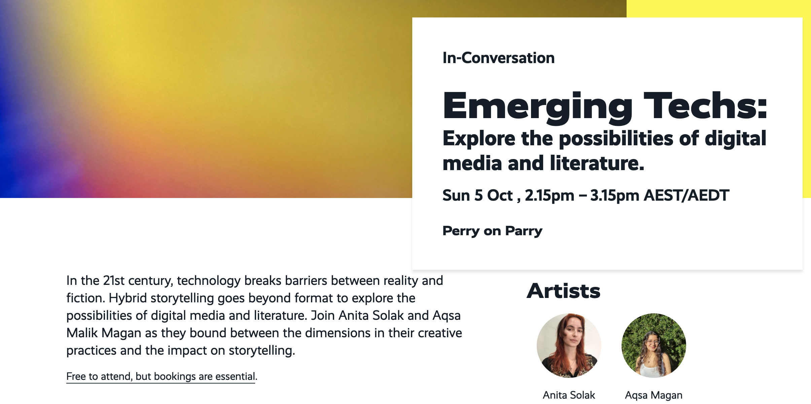

is a poet, writer and editor living and working on unceded Wurundjeri land.
She plays with electronic-literature and the failures of language. Her digi-lit, essays
and poetry can be found in Australian Multilingual Writing Project, Cordite, Going Down
Swinging, Runway Journal, and The Suburban Review among others. When performing poetry
she experiments with live interactive literature, creating space for collaborative
performances between communities and artists. She was a poetry editor for Voiceworks, a
2023 Wheeler Centre Hot Desk Fellow, shortlisted for the 2023 Judith Wright Poetry
Prize, studied at the School for Poetic Computation in 2024, and was the Richell Prize
Coordinator in 2025.

Hosted a workshop at the National Young Writers Conference introducing attendees to electronic literature, coding and digital storytelling
Participated in a panel about using technology to tell stories, creativity in the digital landscape, and our hopes for the future of the web.
publication history